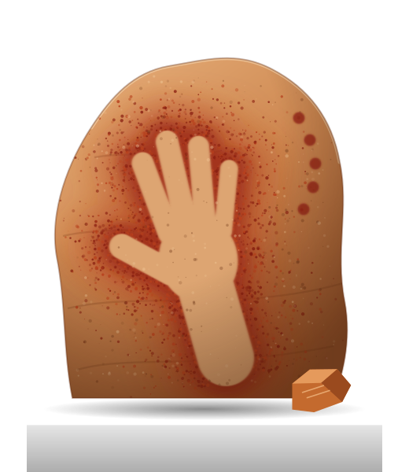

Era 01 · The Palaeolithic
40,000 BC
Ochre Fe₂O₃ · iron-oxide earth
The first colour was dirt. Dug from iron-rich clay, ground on a stone and blown through a hollow bone, red ochre left the oldest signatures we have: a hand pressed to a cave wall, saying I was here.
- Source
- Iron-rich clay
- Found at
- Sulawesi, Blombos
- Cost
- Free, if you could find it
